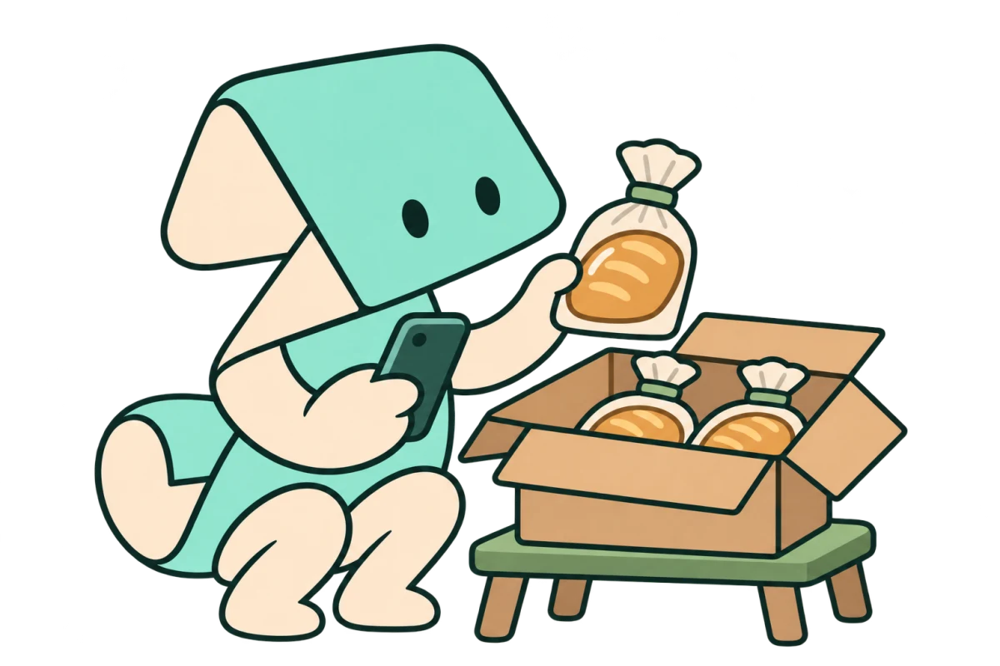

07.00 · Barang datang
Stok pagi sudah masuk?
Roti kemasan dari pemasok baru tiba. Catat pembelian roti itu, lalu cek pergerakan stoknya di Kartu Stok.

Kasir Android gratis yang sepenuhnya offline. Catat jualan, cek stok, dan pantau piutang langsung di perangkatmu.

Menu sederhana, langkah mencatat jualan mudah diikuti.
Pakai fitur kasir tanpa langganan.
Catat pembayaran dan sisa tagihan.
Cek omzet, laba rugi, dan arus kas.
Ikuti satu hari di Kedai Pagi, contoh usaha kecil yang menjual kopi dan roti.
07.00 · Barang datang
Roti kemasan dari pemasok baru tiba. Catat pembelian roti itu, lalu cek pergerakan stoknya di Kartu Stok.

12.30 · Kedai ramai
Pilih pesanan pelanggan. Kalau belum dibayar, simpan lewat Data Tunda dan lanjutkan transaksi saat pelanggan siap membayar.
18.00 · Lihat laporan
Lihat omzet hari ini di Laporan Penjualan. Cek uang masuk dan keluar di Ringkasan Arus Kas, lalu buka Piutang untuk melihat sisa tagihan pelanggan.
Jual barang, menu, dan jasa. Terima pembayaran tunai atau tempo.
Catat pembelian dan retur. Pantau barang lewat Kartu Stok dan Cek Stok Fisik.
Lihat omzet, laba rugi, dan arus kas. Ekspor laporan penjualan ke PDF atau Excel.
Cetak struk termal atau bagikan nota dari riwayat transaksi.
Cadangkan dan pulihkan data secara lokal atau lewat Google Drive.
Cari barang dengan memindai barcode saat mencatat penjualan.
Pantau tagihan pelanggan dan pemasok, termasuk pembayaran sebagian.
Catat uang masuk dan keluar, serta transfer antar kas atau rekening.
 NotaKita
NotaKita
Beri pemilik dan staf akses masing-masing, baik di satu toko maupun di beberapa cabang. Gunakan mode tablet untuk meja kasir.
Paket Starter berbayar per cabang.

Jual beras, minyak, atau sembako sambil memantau barang masuk dan sisa stok.
Catat pesanan kopi, minuman, dan makanan dari daftar menu.
Buat daftar layanan dan tarif, lalu catat pembayaran dan cetak nota.
Ya, NotaKu gratis. Kamu bisa menggunakannya tanpa langganan atau batas masa uji coba.
Bisa. Penjualan, stok, dan laporan bisa dipakai offline. Data usaha tersimpan di perangkat. Kamu bisa membuat cadangan lokal atau memilih Google Drive.
Buka Penjualan, cari transaksi yang sudah disimpan, lalu pilih Cetak atau bagikan.
Pada metode Rata-rata Tertimbang, HPP terkunci karena NotaKu menghitungnya otomatis berdasarkan stok dan pembelian. Jika memakai metode Harga Beli Terakhir, kamu bisa mengubah harga beli langsung di Data Barang. Pembelian baru juga akan memperbarui harga beli terakhir secara otomatis.
Buka Retur Pembelian, pilih transaksi pembelian, tentukan barang dan jumlahnya, lalu pilih Simpan Retur.